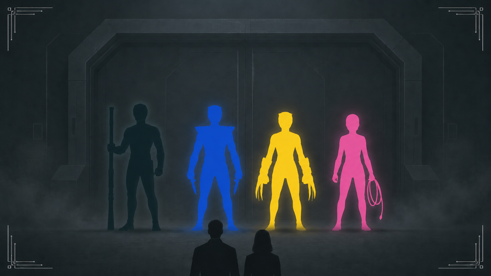

Ending F
Ending F
우리는 두 번 투표했지만 레드를 죽인 사람을 한 명으로 정하지 못했다. 두 번째 투표에서도 같은 수의 표를 받은 이름들이 남았다.
테이블에는 레드의 방에서 발견된 아이의 편지와 박사 연구실에서 가져온 봉투가 놓여 있었다. 박사가 봉투 속 보고서를 펼쳤다. 레드는 아이의 부모를 구하려고 카오스 구역에 잠입 중이었다.
박사는 세 번째 투표를 요구하지 않았다. 블랙이 카오스 구역으로 들어가는 길을 안다고 말하자, 블루가 범인을 정하지 못한 상태로 함께 움직일 수 있겠느냐고 물었다.
“투표는 여기서 멈춰용. 레드가 찾던 두 사람부터 데려온 뒤, 진술을 처음부터 다시 보겠어용.”
“제가 지휘해용. 블랙이 길을 말하면 블루와 옐로가 확인해용. 핑크는 통신을 열어 둬용. 누구도 혼자 움직이지 말아용.”
네 사람은 서로를 의심하면서도 대열을 흩뜨리지 않았다. 갈림길마다 네 사람의 대답이 모두 모일 때까지 기다렸고, 막힌 길에서는 함께 돌아왔다.
수색 끝에 두 사람을 찾아냈다. 돌아오는 동안에도 누구 하나 대열에서 빠지지 않았다.
기다리던 아이는 부모를 발견하자 곧장 달려가 두 사람을 끌어안았다. 네 사람은 아이가 울음을 그치고 부모의 손을 잡을 때까지 곁에서 기다렸다.

연구소로 돌아와도 동률은 깨지지 않았다. 박사는 더 투표하지 않고 네 사람의 진술을 시간순으로 다시 놓았다.
“이번에는 누가 범인인지부터 정하지 말아용. 누가 언제 무엇을 직접 봤는지부터 다시 확인해용.”
네 사람은 다시 자리에 앉았다. 박사가 첫 번째 진술을 펼쳤다.